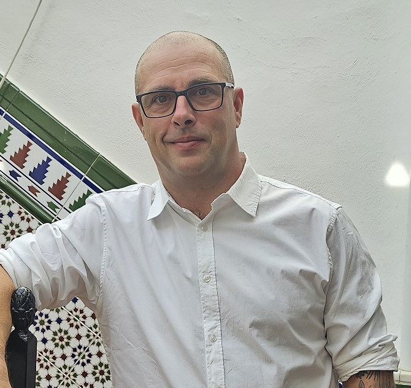

Career Goals

My Mission
My career goal is to leverage technology to create positive change in underserved communities. I am passionate about working with justice-impacted individuals and immigrant communities, using my full-stack development skills to build solutions that bridge gaps in access to resources, education, and opportunities.
Through my technical expertise in Python, Rust, SQL, and web technologies, combined with my experience in Justice Through Code at Columbia Business School, I aim to develop applications and systems that empower these communities and create pathways to success.
I believe technology should be a force for equity and inclusion, and I'm committed to using my skills to make a meaningful impact in the lives of those who need it most.